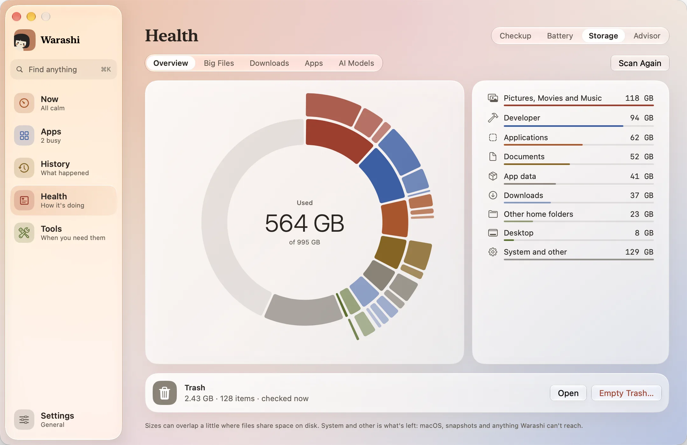
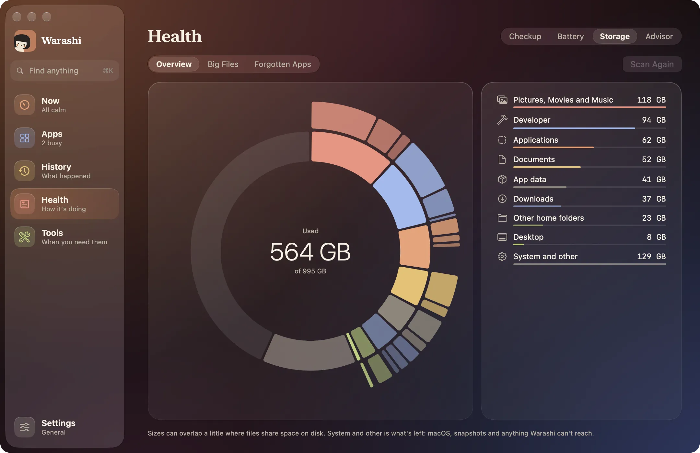

Armazenamento é uma aba de Saúde. Mostra o que ocupa seu disco de inicialização. Abre com seus últimos resultados e os atualiza se tiverem mais de seis horas. Tudo o que você remove vai para o Lixo, depois da sua confirmação, então dá para recuperar até você esvaziá-lo.
- Abra o Armazenamento
Escolha Saúde e depois Armazenamento, pressione o bloco Disco em Agora ou na janela da barra de menus, ou Abrir no cartão de armazenamento da Verificação.


- Ative o Acesso Total ao Disco
Se você não fez isso no tour de boas-vindas, um cartão oferece essa opção. Pressione Abrir Ajustes do Sistema e ative o Warashi na lista, uma única vez. Isso permite que o Armazenamento inclua Mesa, Documentos, Downloads, fotos e dados de apps. O Warashi lê só os tamanhos, nunca os seus arquivos, e nada sai do seu Mac. Você pode pular isso: o Armazenamento mede o resto e o macOS nunca interrompe.
- Explore o anel
O anel interno são suas categorias, mais Sistema e Livre. O anel externo são as maiores pastas de cada uma. Aponte para qualquer parte para ver o nome e o tamanho; o resto esmaece e a linha correspondente se acende na lista.
- Veja o que há dentro
Escolha uma categoria para ver seus maiores itens. A seta ao lado de uma pasta entra nela medindo tudo o que há dentro, e dá para descer nível por nível. A lupa mostra um item no Finder. Seus próprios arquivos também têm um botão de lixo.
- Analise quando quiser
Pressione Analisar de Novo quando quiser. Você pode sair da página enquanto a análise acontece. Por conta própria, o Armazenamento analisa de novo quando você o abre e a última análise tem mais de um dia, e nunca na bateria ou no Modo de Baixo Consumo: uma análise lê boa parte do disco, então espera pelo carregador, a menos que você peça.
- Esvazie a Lixeira
Sob o anel, o cartão Lixeira mostra quanto há na Lixeira e quantos itens, incluindo a Lixeira dos discos conectados. Ele verifica ao abrir a página e a cada dois minutos enquanto ela fica aberta. Esvaziar Lixo… pergunta antes, diz quanto vai embora e então apaga de vez, com uma contagem ao longo do caminho. O que estiver em uso fica, e o cartão avisa.
As outras abas
- Arquivos grandes: arquivos acima de 100 MB, dos maiores ou dos mais antigos primeiro.
- Downloads: tudo na sua pasta Downloads, dos mais antigos aos mais novos, com instaladores marcados: geralmente dispensáveis depois que o app está instalado. Precisa de Acesso Total ao Disco.
- Apps: todos os apps que você instalou, primeiro os não abertos há três meses. Remover… mostra o app e o que ele deixou na sua Biblioteca (dados, caches, ajustes, janelas salvas, registros e, com Acesso Total ao Disco, dados do sandbox), cada item com tamanho e caixa de seleção, e move os marcados para o Lixo. Encerre o app primeiro. Se o macOS recusar, permita o Warashi em Gerenciamento de Apps nos Ajustes do Sistema. Os apps da Apple não aparecem. No fim, Deixado por apps que você removeu lista o que apps já apagados deixaram na sua Biblioteca, pelo identificador, intocado há pelo menos um mês. Nada de um desenvolvedor com app ainda instalado, dados compartilhados ou da Apple aparece.
- Modelos de IA: modelos do Ollama, LM Studio e Hugging Face, com seus tamanhos. Os do LM Studio e Hugging Face podem ir para o Lixo. O Ollama compartilha arquivos entre modelos, então Copiar comando dá o próprio
ollama rmpara executar no Terminal.
O que significam as categorias
- Desenvolvedor: dados do Xcode e Simuladores.
- Dados de apps: tudo na sua pasta Biblioteca, exceto Desenvolvedor.
- Lixeira: o que está esperando para ser esvaziado.
- Outras pastas pessoais: qualquer outra coisa diretamente na sua pasta pessoal, como uma pasta Code.
- Sistema e outros: o que sobra: o próprio macOS, snapshots e lugares que o Warashi não consegue ler.
Se algo não estiver certo
- Alguns lugares precisam do Acesso Total ao Disco: pressione essa linha na lista e depois Abrir Ajustes do Sistema. Se o Warashi não estiver na lista, arraste o ícone dele para lá. Se ainda assim não for contado, pressione Reabra o Warashi.
Mais em Solução de problemas, ou escreva para adam@warashi.app.